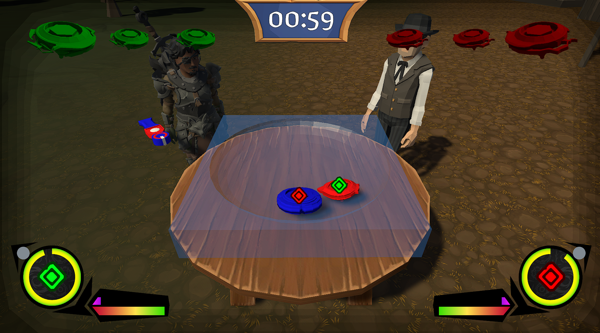
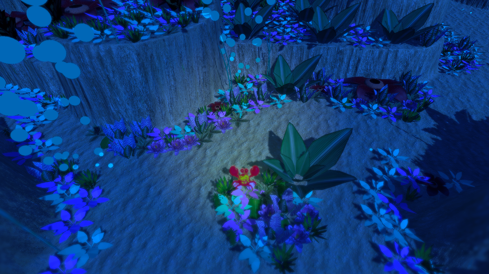
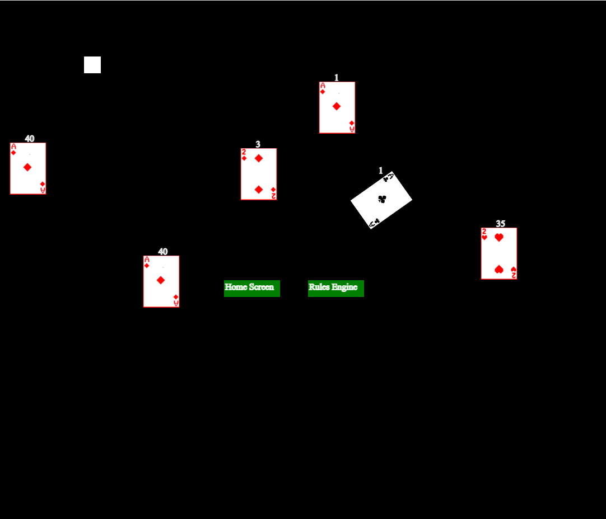
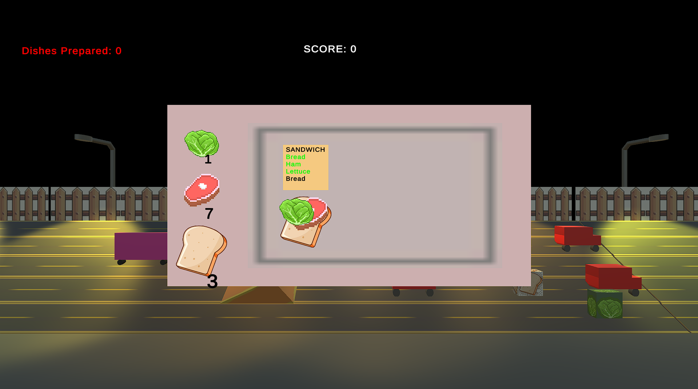

Here are some of the projects I've worked on over the years. Let me know if you find any of them interesting and want to check them out! I have some small personal projects, and some projects I worked on for school projects. I've worked on projects in Unity, some with the JavaScript canvas, as well as several using C# and MonoGame. Many of the personal projects I've worked on are ongoing projects, but I hope to share those here soon!

During the Game Development Capstone class I took in Autumn 2025, I worked on this on a team of 7 people, functioning as the team's project manager as the project progressed. I was one of the people responsible for this, but our group was a bit over ambitious with this project, as the scope of this project was well beyond what it should have been given the time constraints.
We had someone creating the 3D models for the Spinny Metals, someone focused on developing the battle system, as well as several people working on various smaller aspects of the game. Near the start of the project, I was working on the launcher system and worked on some UI elements of the game, such as the inventory and dialogue menus. Though later in the project, I focused more on developing the open-world side of the game, shaping the terrain of the map, and building several of the towns in the map.
Due to scope creep I mentioned earlier, our game had some significant bugs when people first tested it at the capstone showcase at the end of the semester. We had quests that the player could complete by cutting down trees or fishing with their Spinny Metal, though those items weren't added to their inventory and they didn't progress the quest. Adding an item to the player's inventory as a reward for the quest also didn't work. Though we weren't able to fix these bugs by the end of the semester, my goal was just to have a cool game, so I thought I would keep working on it.
Over the next few months, I thought I'd do my best to fix the bugs in the game so it could be played with all the intended functionality. And in mid-March, I got everything working, at least the functionality that had been broken. So now, the game lets the player complete quests given by NPCs to collect Spinny Metal Parts to assemble a Spinny Metal, which they can battle NPCs with!

I made this game as a project for a game development class. The player controls a crab who explores the map trying to collect gold. As they collect more gold, the crab becomes increasingly more SHINY!! This game was inspired by the crab Tamatoa in Moana, as well as the song "Shiny" in the movie. In the game, the song is played if certain conditions are met, though the song is not mine, so I don't plan to officially publish the game. But I thought it would be a cool game for any Moana fans.

This game is still an ongoing project, but I've made a lot of progress, so there is a functional part of it. This was the first multiplayer game I've worked on, as I used Node.js so the game could be played on multiple windows. Currently, I have a deck of cards that can be easily modified how I want, but all the functionality isn't yet accessible by the user. So the player can move around the decks, rotate the deck, or just add or remove individual cards from the deck.
The goal for the rest of the game is to build out the "Rules Engine" for the game, where the player can create rulesets for the deck of cards, allowing them to set rules for any card game using a regular deck of cards. The "Rules Engine" is still a work in progress, but eventually, the player should be able to save rulesets, potentially sharing them with other people. The rulesets will be defined by a block coding system, which can hopefully teach them a little about coding.
A stretch goal might be to guide a player through creating the rules for a certain card game. These block coding lessons can hopefully teach them about some of the principles of coding, and they might learn about more efficient ways to create the rules for the card games. There's a lot of different card games, and hopefully the Rules Engine gives the players the freedom to create any kinds of rules, and maybe even invent a new card game!

This is possibly the most chaotic game that I've made where I've packed in as many new features as possible. The premise of the game is that the player owns a food truck, but can't afford to pay any employees, and hasn't gotten any permits to park anywhere. So in this sidescroller, the player must collect ingredients on the road, avoiding obstacles, while preparing the food and delivering it. Though the player cannot drive and cook at the same time and must switch back and forth between driving and cooking without crashing. The game feels a lot like a distracted driving simulator, which I guess was the goal of the game.
This game was partially inspired by "Cooking Mama", which has many cooking minigames, where the player performs different actions to prepare a variety of dishes within the time limit. I wanted to take that game, but make it so that the player was also driving in a sidescroller. The game focuses on both driving and cooking, making it so that the player can't just focus on one side of the game.